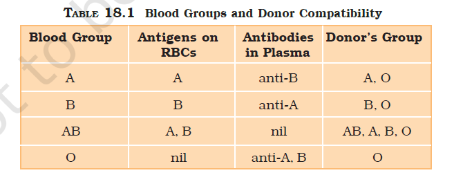

UBAID KHANStudent at Rizvi College of science,commerce and arts. hello there it's my first web page |
You have learnt that all living cells have to be provided with nutrients, O2 and other essential substances. Also, the waste or harmful substances produced, have to be removed continuously for healthy functioning of tissues. It is therefore, essential to have efficient mechanisms for the movement of these substances to the cells and from the cells. Different groups of animals have evolved different methods for this transport. Simple organisms like sponges and coelenterates circulate water from their surroundings through their body cavities to facilitate the cells to exchange these substances. More complex organisms use special fluids within their bodies to transport such materials. Blood is the most commonly used body fluid by most of the higher organisms including humans for this purpose. Another body fluid, lymph, also helps in the transport of certain substances. In this chapter, you will learn about the composition and properties of blood and lymph (tissue fluid) and the mechanism of circulation of blood is also explained herein.
Blood is a special connective tissue consisting of a fluid matrix, plasma, and formed elements
Plasma is a straw coloured, viscous fluid constituting nearly 55 per cent of the blood. 90-92 per cent of plasma is water and proteins contribute 6-8 per cent of it. Fibrinogen, globulins and albumins are the major proteins.Fibrinogens are needed for clotting or coagulation of blood. Globulins primarly are involved in defense mechanisms of the body and the albumins help in osmotic balance. Plasma also contains small amounts of minerals like Na+, Ca++, Mg++, HCO3 –, Cl–, etc. Glucose, amino acids, lipids, etc., are also present in the plasma as they are always in transit in the body. Factors for coagulation or clotting of blood are also present in the plasma in an inactive form. Plasma without the clotting factors is called serum.
Erythrocytes, leucocytes and platelets are collectively called formed elements (Figure 18.1) and they constitute nearly 45 per cent of the blood. Erythrocytes or red blood cells (RBC) are the most abundant of all the cells in blood. A healthy adult man has, on an average, 5 millions to 5.5 millions of RBCs mm–3 of blood. RBCs are formed in the red bone marrow in the adults. RBCs are devoid of nucleus in most of the mammals and are biconcave in shape. They have a red coloured, iron containing complex protein called haemoglobin, hence the colour and name of these cells. A healthy individual has 12-16 gms of haemoglobin in every 100 ml of blood. These molecules play a significant role in transport of respiratory gases. RBCs have an average life span of 120 days after which they are destroyed in the spleen (graveyard of RBCs). Leucocytes are also known as white blood cells (WBC) as they are colourless due to the lack of haemoglobin. They are nucleated and are relatively lesser in number which averages 6000-8000 mm–3 of blood. Leucocytes are generally short lived. We have two main categories of WBCs – granulocytes and agranulocytes. Neutrophils, eosinophils and basophils are different types of granulocytes, while lymphocytes and monocytes are the agranulocytes. Neutrophils are the most abundant cells (60-65 per cent) of the total WBCs and basophils are the least (0.5-1 per cent) among them. Neutrophils and monocytes (6-8 per cent) are phagocytic cells which destroy foreign organisms entering the body. Basophils secrete histamine, serotonin, heparin, etc., and are involved in inflammatory reactions. Eosinophils (2-3 per cent) resist infections and are also associated with allergic reactions. Lymphocytes (20-25 per cent) are of two major types – ‘B’ and ‘T’ forms. Both B and T lymphocytes are responsible for immune responses of the body. Platelets also called thrombocytes, are cell fragments produced from megakaryocytes (special cells in the bone marrow). Blood normally contains 1,500,00-3,500,00 platelets mm–3. Platelets can release a variety of substances most of which are involved in the coagulation or clotting of blood. A reduction in their number can lead to clotting disorders which will lead to excessive loss of blood from the body.
As you know, blood of human beings differ in certain aspects though it appears to be similar. Various types of grouping of blood has been done. Two such groupings – the ABO and Rh – are widely used all over the world.
ABO grouping is based on the presence or absence of two surface antigens
(chemicals that can induce immune response) on the RBCs namely A
and B. Similarly, the plasma of different individuals contain two natural
antibodies (proteins produced in response to antigens). The distribution
of antigens and antibodies in the four groups of blood, A, B, AB and O
are given in Table 18.1. You probably know that during blood transfusion,
any blood cannot be used; the blood of a donor has to be carefully matched
with the blood of a recipient before any blood transfusion to avoid severe
problems of clumping (destruction of RBC). The donor’s compatibility is
also shown in the Table 18.1.

From the above mentioned table it is evident that group ‘O’ blood can
be donated to persons with any other blood group and hence ‘O’ group
individuals are called ‘universal donors’. Persons with ‘AB’ group can
accept blood from persons with AB as well as the other groups of blood.
Therefore, such persons are called ‘universal recipients’.
Another antigen, the Rh antigen similar to one present in Rhesus monkeys (hence Rh), is also observed on the surface of RBCs of majority (nearly 80 per cent) of humans. Such individuals are called Rh positive (Rh+ve) and those in whom this antigen is absent are called Rh negative (Rh-ve). An Rh-ve person, if exposed to Rh+ve blood, will form specific antibodies against the Rh antigens. Therefore, Rh group should also be matched before transfusions. A special case of Rh incompatibility (mismatching) has been observed between the Rh-ve blood of a pregnant mother with Rh+ve blood of the foetus. Rh antigens of the foetus do not get exposed to the Rh-ve blood of the mother in the first pregnancy as the two bloods are well separated by the placenta. However, during the delivery of the first child, there is a possibility of exposure of the maternal blood to small amounts of the Rh+ve blood from the foetus. In such cases, the mother starts preparing antibodies against Rh antigen in her blood. In case of her subsequent pregnancies, the Rh antibodies from the mother (Rh-ve) can leak into the blood of the foetus (Rh+ve) and destroy the foetal RBCs. This could be fatal to the foetus or could cause severe anaemia and jaundice to the baby. This condition is called erythroblastosis foetalis. This can be avoided by administering anti-Rh antibodies to the mother immediately after the delivery of the first child.